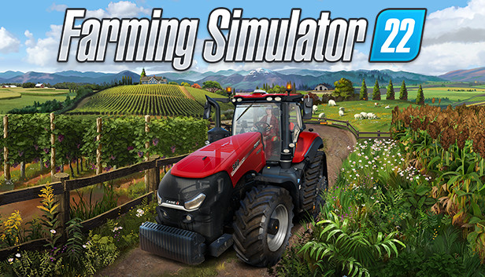

Farming Simulator 22 online
Description
Farming Simulator 22 est un jeu vidéo de simulation agricole développé et édité par la société suisse GIANTS Software.
Le jeu est sorti le 22 novembre 2021 sur Microsoft Windows, macOS, Stadia, PlayStation 4, PlayStation 5, Xbox One et Xbox Series.

Le but du jeu
Le but du jeu est de gérer une exploitation agricole à la première personne, seul. Diverses fonctionnalités et menus vous sont présentés afin d'optimiser vos revenus et votre production. Cela vous permettra de renouveler votre matériel via la boutique intégrée au jeu ou d'investir dans de nouveaux terrains et/ou bâtiments. Pour faciliter certains travaux, il est possible d'employer un ouvrier. Vous pouvez pratiquer l'élevage, la culture de la terre ainsi que la sylviculture, la viticulture et l'oléiculture. L'édition 2022 offre un système simulant les saisons pour apporter plus de réalisme au jeu.
Le crack
Farming simulator 22 est actuellement cracker en version 1.7.1.0 et le mode multijoueur et disponible même en crosplay. Pour jouer à farming simulator 22 veuillez télécharger le fichier en clickant sur le bouton télécharger si dessous. Une fois cela fait vous pouvez aller dans le dossier farming simulator 22 puis encore une fois et double clicker sur farming simulator 22.exe. Bon jeu.